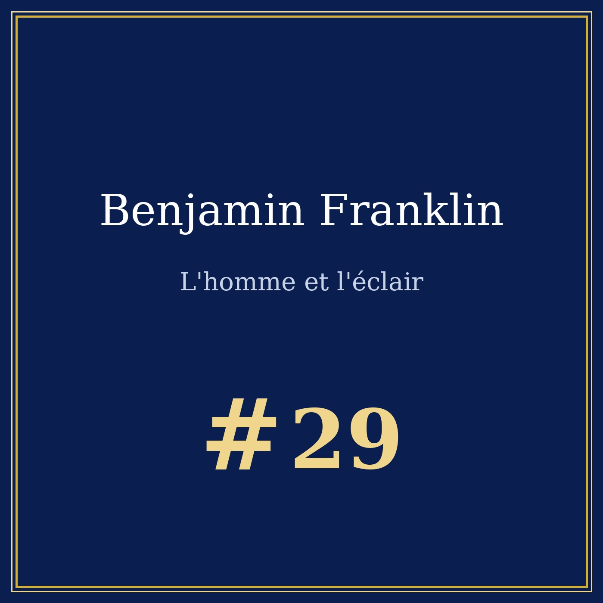
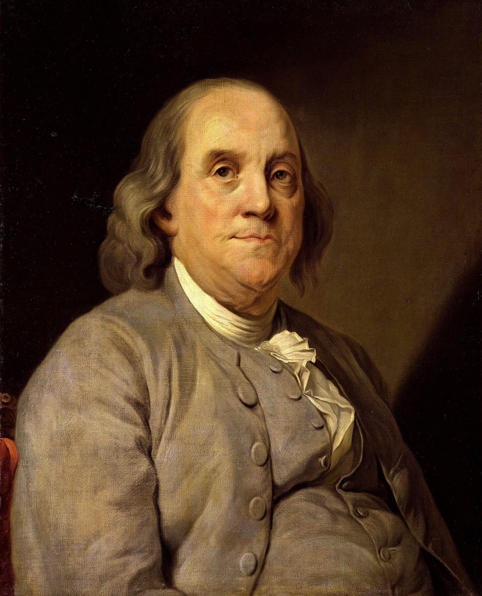

Portrait n°29 — l'imprimeur qui a fait de la foudre une question, puis une preuve
Œuvre de fiction radiophonique et biographique à caractère historique et patrimonial. Les faits présentés dans cet article sont réels et sourcés ; l'entretien est une reconstitution imaginée.


🎧 Écoutez le portrait : Benjamin Franklin — L'homme et l'éclair, 14 min 03 — Écouter sur Spotify →
Entretien imaginaire, Philadelphie, juin 1752.
Philadelphie, une nuit de juin 1752. Un cerf-volant de soie monte vers les nuages, un jeune homme tient la ficelle pendant qu'une clé de métal, nouée au bout, se charge d'électricité. Franklin corrige l'image connue : ce n'est pas lui qui tenait la ficelle, mais son fils William. Et il n'a pas trouvé la clé dans le tonnerre : il l'y a mise pour voir ce qui en sortirait. L'orage ne les a pas touchés, le cerf-volant n'a pas été foudroyé : c'est William qui a vu l'étincelle.
Benjamin Franklin naît le 17 janvier 1706 à Boston, dernier des dix-sept enfants d'une famille nombreuse où le père est fabricant de chandelles et de savons. Sans études, à douze ans, il entre en apprentissage chez son frère James, imprimeur, et apprend le métier dans la compose et à la presse. En 1723, il quitte Boston pour Philadelphie ; en 1729, il devient associé du Pennsylvania Gazette.
À vingt et un ans, en 1727, Franklin fonde le Junto, son assemblée du vendredi soir : une manufacture à projets qui répétait quatre questions : ce qui est fait, ce qui devrait l'être, ce qui sera fait, ce qui ne l'est pas. De là sont sortis la bibliothèque de la ville, l'académie qui devint l'université de Pennsylvanie et un hôpital.
En décembre 1732, il lance l'Almanach du Bonhomme Richard sous le pseudonyme de Richard Saunders, et le continue jusqu'en 1758 : la première édition se vend à dix mille exemplaires. On n'a retenu qu'une phrase : le temps est de l'argent.
On lui demandait si l'électricité était une matière, un fluide ou un souffle. Sa réponse tient en un mot : c'est un fluide, un seul, dont le surplus et le manque ne sont que deux états. Il lui donne ses noms — plus, moins, charge, batterie — et, en 1748, construit un appareil à onze plaques de verre séparées par du plomb.
En 1755, dans une lettre à Peter Collinson à Londres, il formule le principe que ce qui entre doit sortir : sur un corps isolé, la quantité de matière électrique reste la même, qu'elle se dissipe en étincelles ou s'accumule — la conservation de la charge.
En 1749, Franklin se plaint dans ses notes que ses expériences n'ont servi à rien. Il organise un dîner où la dinde est tuée par décharge et rôtie sur une broche électrique ; il en prépare plusieurs, et note qu'elles se mangeaient tendres.
Et la priorité ? Elle n'est pas à lui. À Marly-la-Ville, Thomas-François Dalibard fait dresser, le 10 mai 1752, une barre de fer de quarante pieds, foudroyée le 19 mai. Franklin ne revendique rien : il écrit que la même expérience se faisait déjà à Marly. L'idée était la sienne, le risque celui de l'autre.
Le 19 octobre 1752, la Pennsylvania Gazette publie la marche à suivre : deux liteaux de cèdre croisés, un grand mouchoir de soie noué dessus, un fil de fer pointu au sommet, une clé au bout de la ficelle, et l'on s'abrite pour que la soie reste sèche. Quand la pluie a mouillé la ficelle, le fluide sort de la clé en abondance : on allume des esprits, on charge une bouteille de Leyde.
De là le paratonnerre : une tige de fer pointue, aussi haute que la maison, un fil qui descend jusqu'en terre ; la pointe boit le fluide à distance, sans étincelle. Dès 1752, Franklin en pose un sur sa maison, un sur l'Independence Hall, un sur l'académie de Philadelphie, et refuse de le breveter.
Georg Wilhelm Richmann meurt en 1753 à Saint-Pétersbourg en répétant une expérience de ce type ; Londres l'accueille : médaille Copley de la Société royale en 1753, membre en 1756. L'unité de charge en CGS porte son nom : le franklin.
La République est née : Join, or Die en 1754, la Déclaration d'indépendance en 1776, puis la mission en France de 1778 à 1785 — il demande l'indépendance entière, la pêche sur les côtes, une frontière à l'ouest. Le 3 septembre 1783, à l'hôtel d'York, il signe la paix avec John Adams et John Jay.
Son fils William, lui, est resté fidèle à la Couronne : gouverneur du New Jersey. Les deux hommes ont fini par ne plus s'écrire. En 1776, Franklin siégea au comité du grand sceau, où il proposait Moïse tendant la main sur la mer et la devise que la rébellion contre les tyrans est obéissance à Dieu.
Et il y a l'autre face. Franklin a possédé des esclaves, et le dit sans détour : on ne se corrige pas d'un coup, on se corrige par la suite. Il les affranchit en 1772. En 1787, il préside la Société de Pennsylvanie pour l'abolition de l'esclavage ; en février 1790, il signe une requête au Congrès.
En 1787, à la Convention de Philadelphie, Franklin a quatre-vingt-un ans : il est le doyen des délégués. Au Grand Comité, il propose le compromis — la Chambre choisie à la population, le Sénat à raison d'un vote par État — et combat le veto présidentiel. On l'appellera le père de la Constitution.
L'épitaphe, il l'écrivit à vingt-deux ans, en 1728 : un corps d'imprimeur, comme la couverture d'un vieux livre dont on a arraché les feuillets et gratté la dorure, qui reste là, pâture aux vers — l'ouvrage ne serait pas entièrement perdu, il paraîtrait une fois encore, revu et corrigé par l'auteur. Sur la dalle de Christ Church, deux mots : Benjamin et Deborah Franklin.
Il meurt le 17 avril 1790, à quatre-vingt-quatre ans. Aujourd'hui, ses paratonnerres se dressent sur les toits du monde entier, son nom d'unité de charge sert encore, et le club de 1743 est devenu l'American Philosophical Society.